정보처리기사(구) (2013-03-10 기출문제)
1과목: 데이터 베이스
1. SQL에서 DELETE 명령에 대한 설명으로 옳지 않은 것은?
- 테이블의 행을 삭제할 때 사용한다.
- WHERE 조건절이 없는 DELETE 명령을 수행하면 DROP TABLE 명령을 수행했을 때와 같은 효과를 얻을 수 있다.
- SQL을 사용 용도에 따라 분류할 경우 DML에 해당한다.
- 기본 사용 형식은 "DELETE FROM 테이블 [WHERE 조건];“이다.
(정답률: 76%)

2. 트랜잭션의 특성을 모두 나열한 것은?
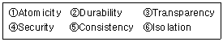
- ①, ②, ③
- ③, ④, ⑤, ⑥
- ①, ②, ⑤, ⑥
- ①, ②, ③, ④, ⑤
(정답률: 83%)
3. 시스템 카탈로그에 관한 설명으로 옳지 않은 것은?
- 가상테이블이며 메타데이터라고도 한다.
- 시스템 카탈로그 내의 각 테이블은 DBMS에서 지원하는 개체들에 관한 정보를 포함한다.
- 시스템의 사용자들에 관한 정보를 포함하고 있다.
- DBMS가 스스로 생성하고 유지하는 데이터베이스 내의 특별한 테이블들의 집합체이다.
(정답률: 47%)
4. 뷰(View)에 대한 설명으로 옳지 않은 것은?
- 뷰는 독자적인 인덱스를 가질 수 없다.
- 뷰는 논리적 독립성을 제공한다.
- 뷰로 구성된 내용에 대한 삽입, 갱신, 삭제 연산에는 제약이 따른다.
- 뷰가 정의된 기본 테이블이 삭제되더라도 뷰는 자동적으로 삭제되지 않는다.
(정답률: 77%)
5. Which is not in the three-schema architecture?
- internal schema
- conceptual schema
- external schema
- procedural schema
(정답률: 76%)
6. 데이터베이스의 등장 이유로 보기 어려운 것은?
- 삽입, 삭제, 갱신 등을 통해서 현재의 데이터를 동적으로 유지하고 싶었다.
- 데이터의 가용성 증가를 위해 중복을 허용하고 싶었다.
- 여러 사용자가 데이터를 공유해야 할 필요가 생겼다.
- 물리적인 주소가 아닌 데이터 값에 의한 검색을 수행하고 싶었다.
(정답률: 80%)
7. 다음 트리의 후위 순회 결과는?
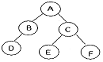
- A B D C E F
- D B A E C F
- A B C D E F
- D B E F C A
(정답률: 75%)
8. 해싱에서 동일한 홈 주소로 인하여 충돌이 일어난 레코드들의 집합을 의미하는 것은?
- Synonym
- Collision
- Bucket
- Overflow
(정답률: 67%)
9. 데이터베이스 정의에 해당되는 내용을 모두 나열한 것은?
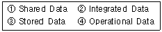
- ②, ③
- ①, ②, ③
- ①, ③, ④
- ①, ②, ③, ④
(정답률: 66%)
10. 데이터베이스의 설계과정 순서로 옳은 것은?
- 기획→개념적설계→요구설계→물리적설계→논리적설계
- 기획→요구설계→개념적설계→논리적설계→물리적설계
- 기획→논리적설계→요구설계→물리적설계→개념적설계
- 기획→요구설계→물리적설계→논리적설계→개념적설계
(정답률: 84%)
11. 로킹 단위가 클 경우에 대한 설명으로 옳은 것은?
- 로킹 오버헤드 증가, 데이터베이스 공유도 저하
- 로킹 오버헤드 감소, 데이터베이스 공유도 저하
- 로킹 오버헤드 감소, 데이터베이스 공유도 증가
- 로킹 오버헤드 증가, 데이터베이스 공유도 증가
(정답률: 60%)
12. 개체-관계 모델(E-R)의 그래픽 표현으로 옳지 않은 것은?
- 개체타입 - 사각형
- 속성 - 원형
- 관계타입 - 마름모
- 연결 - 삼각형
(정답률: 82%)
13. 병행제어의 목적으로 옳지 않은 것은?
- 시스템 활용도 최대화
- 데이터베이스 공유도 최대화
- 데이터베이스 일관성 유지
- 사용자에 대한 응답시간 최대화
(정답률: 82%)
14. 다음 자료에 대하여 선택(Selection) 정렬을 이용하여 오름차순으로 정렬하고자 한다. 3회전 후의 결과로 옳은 것은?
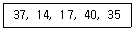
- 14, 17, 37, 40, 35
- 14, 37, 17, 40, 35
- 14, 17, 35, 37, 40
- 14, 17, 35, 40, 37
(정답률: 58%)
15. 선형 구조만으로 나열된 것은?
- 트리, 그래프
- 트리, 그래프, 스택, 큐
- 트리, 배열, 스택, 큐
- 배열, 스택, 큐
(정답률: 74%)
16. What are general configuration of indexed sequential file?
- Index area, Mark area, Overflow area
- Index area, Prime area, Overflow area
- Index area, Mark area, Excess area
- Index area, Prime area, Mark area
(정답률: 61%)
17. 정규화에 관한 설명으로 옳지 않은 것은?
- 릴레이션 R의 도메인들의 값이 원자 값만을 가지면 릴레이션 R은 제1정규형에 해당된다.
- 릴레이션 R이 제1정규형을 만족하면서, 키가 아닌 모든 속성이 기본 키에 완전 함수 종속이면 릴레이션 R은 제2정규형에 해당된다.
- 정규형들은 차수가 높아질수록(제1정규형→제5정규형) 만족시켜야 할 제약조건이 감소된다.
- 릴레이션 R이 제2정규형을 만족하면서, 키가 아닌 모든 속성들이 기본 키에 이행적으로 함수 종속되지 않으면 릴레이션 R은 제3정규형에 해당된다.
(정답률: 74%)
18. 어떤 릴레이션 R에서 X와 Y를 각각 R의 애트리뷰트 집합의 부분 집합이라고 할 경우 애트리뷰트 X의 값 각각에 대해 시간에 관계없이 항상 애트리뷰트 Y의 값이 오직 하나만 연관되어 있을 때 Y는 함수 종속이라고 한다. 이 함수 종속의 표기로 옳은 것은?
- Y → X
- Y ⊂ X
- X → Y
- X ⊂ Y
(정답률: 72%)
19. 다음 문장의 ( ) 안 내용으로 공통 적용될 수 있는 가장 적절한 내용은 무엇인가?
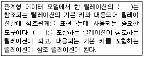
- 후보키(candidate key)
- 대체키(alternate key)
- 외래키(foreign key)
- 수퍼키(superkey)
(정답률: 69%)
20. 릴레이션을 조작할 때 데이터의 중복으로 인하여 발생하는 이상(anomaly) 현상이 아닌 것은?
- 검색 이상
- 삽입 이상
- 삭제 이상
- 갱신 이상
(정답률: 60%)
2과목: 전자 계산기 구조
21. 중앙연산 처리장치에서 micro-operation 이 실행되도록 하는 것은?
- 스위치(switch)
- 레지스터(register)
- 누산기(accumulator)
- 제어신호(control signal)
(정답률: 46%)
22. RAM에 관한 설명 중 틀린 것은?
- DRAM은 캐패시터에 전하를 저장하는 방식으로 데이터를 저장한다.
- SRAM은 플립플롭을 사용해 데이터를 저장하기 때문에 방전 현상이 나타난다.
- DRAM은 상대적으로 소비전력이 적으며 대용량 메모리 제조에 적합하다.
- SRAM은 컴퓨터에서 캐시 메모리로 주로 사용된다.
(정답률: 61%)
23. 다음 회로의 출력 Y 값은?
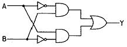
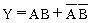
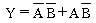
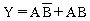
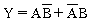
(정답률: 75%)
24. 데이터 단위가 8비트인 메모리에서 용량이 64Kbyte 인 경우의 어드레스 핀의 개수는?
- 12개
- 14개
- 16개
- 18개
(정답률: 60%)
25. 4×2 RAM을 이용하여 16×4 메모리를 구성하고자 할 경우에 필요한 4×2 RAM의 수는?
- 4개
- 8개
- 16개
- 32개
(정답률: 68%)
26. 하드웨어 신호에 의하여 특정번지의 서브루틴을 수행하는 것은?
- vectored interrupt
- handshaking mode
- subroutine call
- DMA 방식
(정답률: 58%)
27. 64Kbyte인 주소 공간(address space)과 4Kbyte인 기억 공간(memory space)을 가진 컴퓨터의 경우 한 페이지(page)가 512byte로 구성되었다면 페이지와 블록 수는 각각 얼마인가?
- 16페이지, 12블록
- 128페이지, 8블록
- 256페이지, 16블록
- 64페이지, 4블록
(정답률: 58%)
28. 다중처리기 시스템의 상호연결구조 방식이 아닌 것은?
- 코드분할 스위치
- 공유버스
- 크로스바 스위치
- 다단계상호연결망
(정답률: 40%)
29. 캐시의 쓰기 정책 중 write-through 방식의 단점은?
- 쓰기 동작에 걸리는 시간이 길다.
- 읽기 동작에 걸리는 시간이 길다.
- 하드웨어가 복잡하다.
- 주기억장치의 내용이 무효상태인 경우가 있다.
(정답률: 54%)
30. 인터럽트의 요청이 있을 경우에 처리하는 내용 중 가장 관계가 적은 것은?
- 중앙처리장치는 인터럽트를 요구한 장치를 확인하기 위하여 입출력장치를 폴링한다.
- PSW(Program Status Word)에 현재의 상태를 보관한다.
- 인터럽트 서비스 프로그램은 실행하는 중간에는 다른 인터럽트를 처리할 수 없다.
- 인터럽트를 요구한 장치를 위한 인터럽트 서비스 프로그램을 실행한다.
(정답률: 58%)
31. 가상기억장치에 대한 설명으로 틀린 것은?
- 가상기억장치의 목적은 보조기억장치를 주기억장치처럼 사용하는 것이다.
- 처리속도가 CPU 속도와 비슷하다.
- 소프트웨어적인 방법이다.
- 주기억장치의 이용률과 다중 프로그래밍의 효율을 높일 수 있다.
(정답률: 61%)
32. RISC 프로세서의 설명으로 옳지 않은 것은?
- 인텔 계열의 거의 모든 프로세서에서 사용되고 있다.
- 축소 명령어 세트 컴퓨터의 약어이다.
- 명령어 코드로 구성하기 위한 bit 수의 증가에 대한 보완으로 개발된 프로세서 이다.
- 명령어들의 사용빈도를 조사하여 사용 빈도가 높은 명령어만 사용하는 프로세서이다.
(정답률: 41%)
33. CPU에 의해서 입출력이 일어나지 않고 별도의 입출력 제어기에 의해서 일어나는 입출력은?
- 프로그램에 의한 I/0
- 인터럽트에 의한 I/0
- DMA 제어기에 의한 I/0
- subroutine에 의한 I/0
(정답률: 50%)
34. 다중처리기를 사용하여 개선하고자 하는 주된 목표가 아닌 것은?
- 수행속도
- 신뢰성
- 유연성
- 대중성
(정답률: 66%)
35. 채널(Channel)에 대한 설명으로 옳지 않은 것은?
- DMA 와 달리 여러 개의 블록을 입출력 할 수 있다.
- 시스템의 입출력 처리 능력을 향상시키는 기능을 한다.
- 멀티플렉서 채널은 저속인 여러 장치를 동시에 제어하는데 적합하다.
- 입출력 동작을 수행하는데 있어서 CPU의 지속적인 개입이 필요하다.
(정답률: 65%)
36. 1개의 Full adder를 구성하기 위해서는 최소 몇 개의 Half adder가 필요한가?
- 1개
- 2개
- 3개
- 4개
(정답률: 70%)
37. 전체 기억장치 액세스 횟수가 50이고, 원하는 데이터가 캐시에 있는 횟수가 45라고 할 때, 캐시의 미스율(miss ratio)_은?
- 0.9
- 0.8
- 0.2
- 0.1
(정답률: 60%)
38. 2의 보수를 사용하여 음수를 표현할 때의 설명으로 옳은 것은?
- 0 은 두 가지로 표현된다.
- 보수를 구하기가 쉽다.
- 보수를 이용한 연산 과정 중 end around carry 과정이 있다.
- 음수의 최대 절대치가 양수의 최대 절대치 보다 1만큼 크다.
(정답률: 58%)
39. 8비트로 -9를 부호화 2의 보수 (signed-2's complement)로 표현한 것은?
- 10001001
- 11111001
- 11110110
- 11110111
(정답률: 47%)
40. 하드와이어 제어방식이 마이크로프로그램을 이용한 제어 방식보다 좋은 점은?
- 비교적 복잡한 명령어들로 구성된 시스템 구현에 적합
- 마이크로 명령어를 추가하기 위해 설계 변경이 용이
- 비교적 명령어 설계에 유연성과 자율성을 보장
- 프로그램 실행속도가 비교적 빠름
(정답률: 50%)
3과목: 운영체제
41. 프로세서의 상호 연결 구조 중 하이퍼 큐브 구조에서 프로세서의 총 개수가 65536 일 때 하나의 프로세서에 연결되는 연결점의 수는?
- 4
- 16
- 32
- 65536
(정답률: 64%)
42. 파일 시스템에 대한 설명 중 옳지 않은 것은?
- 파일(File)은 연관된 데이터들의 집합이다.
- 파일은 각각의 고유한 이름을 갖고 있다.
- 파일은 주로 주기억장치에 저장하여 사용한다.
- 사용자는 파일을 생성하고 수정하며 제거할 수 있다.
(정답률: 61%)
43. 3개의 페이지 프레임을 갖는 시스템에서 페이지 참조 순서가 1, 2, 1, 0, 4, 1, 3 일 경우 LRU(Least Recently Used) 알고리즘에 의한 페이지 대치의 최종 결과는?
- 1, 4, 3
- 1, 2, 0
- 2, 4, 3
- 0, 1, 3
(정답률: 66%)
44. 교착상태 해결 방법 중 시스템에 교착상태가 발생했는지 점검하고 교착상태에 있는 프로세스와 자원을 발견하는 것으로 자원할당 그래프 등을 사용하는 기법은?
- Prevention
- Avoidance
- Recovery
- Detection
(정답률: 50%)
45. 파일 보호 기법 중 다음 설명에 해당하는 것은?
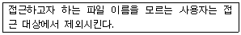
- Naming
- Password
- Access Control
- Cryptography
(정답률: 57%)
46. 임계 영역(Critical Section)에 대한 설명으로 옳은 것은?
- 프로세스들의 상호배제(Mutual Exclusion)가 일어나지 않도록 주의해야 한다.
- 임계 영역에서 수행 중인 프로세스는 인터럽트가 가능한 상태로 만들어야 한다.
- 어느 한 시점에서 둘 이상의 프로세스가 동시에 자원 또는 데이터를 사용하도록 지정된 공유 영역을 의미한다.
- 임계 영역에서의 작업은 신속하게 이루어져야 한다.
(정답률: 47%)
47. 운영체제의 기능으로 옳지 않은 것은?
- 자원 보호 기능을 제공한다.
- 시스템의 오류를 검사하고 복구한다.
- 자원의 스케줄링 기능을 제공한다.
- 사용자와 시스템 간의 인터페이스 역할을 담당하는 하드웨어 장치이다.
(정답률: 65%)
48. 주기억장치 관리기법인 최초, 최적, 최악 적합기법을 각각 사용할 때, 각 방법에 대하여 10K의 프로그램이 할당되는 영역을 각 기법의 순서대로 옳게 나열한 것은? (단, 영역 1, 2, 3, 4는 모두 비어 있다고 가정한다.)
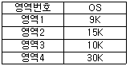
- 영역 2, 영역 3, 영역 4
- 영역 1, 영역 2, 영역 3
- 영역 2, 영역 3, 영역 1
- 영역 1, 영역 3, 영역 2
(정답률: 75%)
49. 파일을 삭제하는 UNIX 명령은?
- rm
- delete
- mkdir
- mv
(정답률: 71%)
50. 다중 처리기 운영체제 구조 중 주/종(Master/Slave) 처리기 시스템에 대한 설명으로 옳지 않은 것은?
- 주프로세서는 입출력과 연산 작업을 수행한다.
- 종프로세서는 운영체제를 수행한다.
- 종프로세서는 입출력 발생시 주프로세서에게 서비스를 요청한다.
- 한 처리기는 주프로세서로 지정하고 다른 처리기들은 종프로세서로 지정하는 구조이다.
(정답률: 70%)
51. 하나의 CPU는 같은 시점에서 여러 개의 작업을 동시에 수행할 수 없기 때문에 CPU의 전체 사용 기간을 작은 작업 시간량(time slice)으로 나누어서 그 시간량 동안만 번갈아 가면서 CPU를 할당하여 각 작업을 처리하는 기법은?
- 실시간 처리 시스템
- 시분할 시스템
- 다중 처리 시스템
- 일괄 처리 시스템
(정답률: 76%)
52. UNIX 파일 시스템에서 부팅시 필요한 코드를 저장하고 있는 블록은?
- 부트 블록
- 슈퍼 블록
- 데이터 블록
- I-NODE 블록
(정답률: 70%)
53. MFD와 UFD로 구성되며, MFD는 각 사용자의 이름이나 계정 번호 및 UFD를 가리키는 포인터를 갖고 있으며 UFD는 오직 한 사용자가 갖고 있는 파일들에 대한 파일 정보만 갖고 있는 디렉토리 구조는?
- 1단계 디렉토리
- 2단계 디렉토리
- 트리구조 디렉토리
- 비순환 그래프 디렉토리
(정답률: 63%)
54. 분산 운영체제에 대한 설명으로 옳지 않은 것은?
- 시스템 변경을 위한 점진적인 확대 용이성
- 고가의 하드웨어에 대한 여러 사용자들 간의 공유
- 빠른 응답시간
- 향상된 보안성
(정답률: 70%)
55. 현재 헤드 위치가 53에 있고 트랙 0번 방향으로 이동 중이다. 요청 대기 큐에는 다음과 같은 순서의 액세스 요청이 대기 중일 때, SSTF 스케줄링 알고리즘을 사용한다면 헤드의 총 이동거리는 얼마인가? (단, 트랙 0번이 가장 안쪽에 위치한다.)
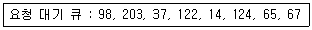
- 202
- 236
- 256
- 320
(정답률: 58%)
56. UNIX 시스템에서 커널의 기능이 아닌 것은?
- 프로세스 관리
- 명령어 해석
- 기억장치 관리
- 입출력 관리
(정답률: 72%)
57. 로더의 기능 중 프로그램을 실행시키기 위하여 기억장치 내에 옮겨놓을 공간을 확보하는 기능은?
- Loading
- Relocation
- Linking
- Allocation
(정답률: 51%)
58. SJF 기법의 길고 짧은 작업 간의 불평등을 보완하기 위한 기법으로 대기 시간과 서비스 시간을 이용한 우선순위 계산 공식으로 우선순위를 정하는 스케줄링 기법은?
- Round-Robin
- FIF0
- HRN
- Multi-level Feedback Queue
(정답률: 68%)
59. 스케줄링 하고자 하는 세 작업의 도착시간과 실행시간은 다음 표와 같다. 이 작업을 SJF로 스케줄링 하였을 때, “작업번호 2”의 종료 시간은? ( 단, 여기서 오버헤드는 무시한다.)
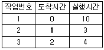
- 3
- 6
- 9
- 13
(정답률: 64%)
60. 4개의 프레임을 수용할 수 있는 주기억장치가 있으며, 초기에는 모두 비어 있다고 가정한다. 다음의 순서로 페이지 참조가 발생할 때, FIF0 페이지 교체 알고리즘을 사용할 경우 페이지 결함의 발생 횟수는?
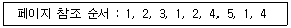
- 4회
- 5회
- 6회
- 7회
(정답률: 61%)
4과목: 소프트웨어 공학
61. 소프트웨어의 품질 목표 중에서 옳고 일관된 결과를 얻기 위하여 요구된 기능을 수행할 수 있는 정도를 나타내는 것은?
- 유지보수성(maintainability)
- 신뢰성(reliability)
- 효율성(efficiency)
- 무결성(integrity)
(정답률: 64%)
62. 람바우의 모델링에서 상태도와 자료흐름도는 각각 어떤 모델링과 관련 있는가?
- 상태도 - 기능모델링, 자료흐름도 - 동적 모델링
- 상태도 - 객체모델링, 자료흐름도 - 기능 모델링
- 상태도 - 객체모델링, 자료흐름도 - 동적 모델링
- 상태도 - 동적모델링, 자료흐름도 - 기능 모델링
(정답률: 49%)
63. 블랙박스 검사에 대한 설명으로 옳지 않은 것은?
- 인터페이스 결함, 성능 결함, 초기화와 종료 이상 결함 등을 찾아낸다.
- 각 기능별로 적절한 정보 영역을 정하여 적합한 입력에 대한 출력의 정확성을 점검한다.
- 블랙박스 검사는 기능 검사라고도 한다.
- 조건 검사, 루프 검사, 데이터 흐름 검사 등의 유형이 있다.
(정답률: 68%)
64. 소프트웨어 프로젝트 관리를 효과적으로 수행하는데 필요한 3P에 해당하는 것은?
- Procedure, Problem, Process
- Problem, People, purity
- Process, Procedure, People
- People, Problem, Process
(정답률: 74%)
65. 자료흐름도(DFD)의 각 요소별 표기 형태의 연결이 옳지 않은 것은?
- Data Store : 오각형
- Process : 원
- Data Flow : 화살표
- Terminator : 사각형
(정답률: 66%)
66. 소프트웨어 재공학 활동 중 원시 코드를 분석하여 소프트웨어 관계를 파악하고 기존 시스템의 설계 정보를 재발견하고 다시 제작하는 작업은?
- Analysis
- Reverse Engineering
- Restructuring
- Migration
(정답률: 60%)
67. 소프트웨어 재공학의 필요성이 대두된 가장 주된 이유는?
- 요구사항 분석의 문제
- 설계의 문제
- 구현의 문제
- 유지보수의 문제
(정답률: 68%)
68. 객체지향 기법의 캡슐화(Encapsulation)에 대한 설명으로 거리가 먼 것은 ?
- 변경 발생시 오류의 파급효과가 적다.
- 인터페이스가 단순화 된다.
- 소프트웨어 재사용성이 높아진다.
- 상위 클래스의 모든 속성과 연산을 하위 클래스가 물려받는 것을 의미한다.
(정답률: 68%)
69. 소프트웨어 품질 보증을 위한 정형 기술 검토의 지침 사항으로 옳지 않은 것은?
- 논쟁과 반박을 제한한다.
- 각 체크 리스트를 작성하고, 자원과 시간 일정을 할당한다.
- 의제와 참가자의 수를 제한하지 않는다.
- 검토의 과정과 결과를 재검토한다.
(정답률: 73%)
70. 소프트웨어 설계시 고려 사항으로 거리가 먼 것은?
- 전체적이고 포괄적인 개념을 설계한 후 차례로 세분화하여 구체화시켜 나간다.
- 요구사항을 모두 구현해야 하고 유지보수가 용이해야 한다.
- 모듈은 독립적인 기능을 갖도록 설계해야 한다.
- 모듈간의 상관성은 높이고 변경이 쉬워야 한다.
(정답률: 54%)
71. 소프트웨어 개발 영역을 결정하는 요인 중 다음 사항과 관계되는 것은?
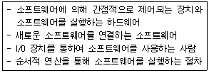
- 기능
- 인터페이스
- 성능
- 제약조건
(정답률: 69%)
72. 소프트웨어 형상관리(Software Configuration - Management)의 설명으로 가장 적합한 것은?
- 소프트웨어의 생산물을 확인하고 소프트웨어 통제, 변경 상태를 기록하고 보관하는 일련의 관리작업이다.
- 수행결과의 완전성을 점검하고 프로젝트의 성과평가 척도를 준비하는 작업이다.
- 소프트웨어 개발과정을 문서화하는 것이다.
- 나선형 모형은 반복적으로 개발이 진행되므로 소프트웨어의 강인성을 높일 수 있다.
(정답률: 54%)
73. 자료 사전에서 기호 “( )”의 의미는?
- "optional"
- "is composed of"
- "iteration of"
- "comment"
(정답률: 49%)
74. 객체지향 개념에 대한 다음 설명의 괄호 안 내용으로 옳은 것은?
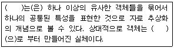
- message
- method
- class
- operation
(정답률: 72%)
75. 소프트웨어 유지보수 유형 중 현재 수행 중인 기능의 수정, 새로운 기능의 추가, 전반적인 기능 개선 등의 요구를 사용자로부터 받았을 때 수행되는 유형으로서, 유지보수 유형 중 제일 많은 비용이 소요되는 것은?
- Preventive maintenance
- Adaptive maintenance
- Corrective maintenance
- Perfective maintenance
(정답률: 46%)
76. 소프트웨어 위기의 현상으로 보기 어려운 것은?
- 프로젝트 개발 일정과 예산 측정의 어려움
- 소프트웨어 유지보수 비용의 증가
- 소프트웨어 개발 적체 현상
- 소프트웨어 개발 인력의 증가
(정답률: 77%)
77. 소프트웨어 재사용에 대한 설명으로 거리가 먼 것은?
- 소프트웨어 품질을 향상시킨다.
- 생산성이 증대된다.
- 새로운 개발 방법 도입이 용이하다.
- 개발 시간이 단축되고 비용이 감소된다.
(정답률: 72%)
78. 소프트웨어 생명주기 모형에 대한 설명으로 옳은 것은?
- 프로토타입 모형은 최종 결과물이 만들어지기 전에 의뢰자가 최종 결과물의 일부 또는 모형을 볼 수 없다.
- 폭포수 모형을 점진적 모형이라고도 한다.
- 폭포수 모형은 시제품을 만들어 최종 결과물을 예측하는 모형이다.
- 나선형 모형은 반복적으로 개발이 진행되므로 소프트웨어의 강인성을 높일 수 있다.
(정답률: 48%)
79. 비용 산정 기법 중 소프트웨어 각 기능의 원시 코드라인 수의 비관치, 낙관치, 기대치를 측정하여 예측치를 구하고 이를 이용하여 비용을 산정하는 기법은?
- Effort Per Task 기법
- 전문가 감정 기법
- LOC 기법
- 델파이 기법
(정답률: 62%)
80. 고객이 개발자의 위치에서 소프트웨어에 대한 검사를 수행하며, 일반적으로 개발자가 참석하여 통제된 환경에서 행해지는 검증 검사 기법은?
- 알파 검사
- 베타 검사
- 강도 검사
- 복구 검사
(정답률: 65%)
5과목: 데이터 통신
81. HDLC의 프레임(Frame)의 구조가 순서대로 올바르게 나열된 것은? (단, A : Address, F : Flag, C : Control, D : Data, S : Frame Check Sequence)
- F-D-C-A-S-F
- F-C-D-S-A-F
- F-A-C-D-S-F
- F-A-D-C-S-F
(정답률: 60%)
82. 문자 동기 전송방식에서 데이터 투명성(Data Transparent)을 위해 삽입되는 제어문자는?
- ETX
- STX
- DLE
- SYN
(정답률: 57%)
83. 인터넷 프로토콜로 사용되는 TCP/IP의 계층화 모델 중 Transport 계층에서 사용되는 프로토콜은?
- FTP
- IP
- ICMP
- UDP
(정답률: 56%)
84. 송신측은 하나의 블록을 전송한 후 수신측에서 에러의 발생을 점검한 다음 에러 발생 유무 신호를 보내올 때까지 기다리는 ARQ 방식은?
- continuous ARQ
- adaptive ARQ
- Go-Back-N ARQ
- stop and wait ARQ
(정답률: 73%)
85. 아날로그 데이터를 디지털 신호로 변환하는 방식은?
- 진폭 편이 변조(ASK)
- 주파수 편이 변조(FSK)
- 위상 편이 변조(PSK)
- 펄스 부호 변조(PCM)
(정답률: 62%)
86. 인터 네트워킹을 위해 사용되는 관련 장비가 아닌 것은?
- 리피터
- 라우터
- 브리지
- 감쇄기
(정답률: 73%)
87. 다음 베이스 밴드 전송방식 중 비트 간격의 시작점에서는 항상 천이가 발생하며, “1”의 경우에는 비트 간격의 중간에서 천이가 발생하고, “0”의 경우에는 비트 간격의 중간에서 천이가 없는 방식은?
- NRZ-L방식
- NRZ-M 방식
- NRZ-S 방식
- NRZ-I 방식
(정답률: 46%)
88. 비동기 전송에서 한문자의 전송과 그 다음 문자의 전송을 어떻게 구별하는가?
- 문자 처음과 끝에 Block pattern(01111110)을 추가하여 구분한다.
- 문자 앞에 (01101101)코드를 추가하여 구분한다.
- 각 문자코드의 맨 앞에는 시작비트를 두고, 문자코드 맨 뒤에는 정지비트를 두어 구분한다.
- 문자와 문자 사이에 (11111111)코드를 추가하여 구분한다.
(정답률: 62%)
89. IP주소의 5개 클래스 중 멀티캐스팅을 사용하기 위해 예약되어 있으며 netid 와 hostid가 없는 것은?
- A 클래스
- B 클래스
- C 클래스
- D 클래스
(정답률: 61%)
90. 다음 표에서 A, B, C, D 문자 전송 시 수직 홀수패리티 비트 검사에서 패리티 비트 값이 잘못된 문자는?
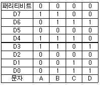
- A
- B
- C
- D
(정답률: 69%)
91. 통신 속도가 2400[baud]이고, 4상 위상변조를 하면 데이터의 전송속도는 얼마인가?
- 2400[bps]
- 4800[bps]
- 9600[bps]
- 19200[bps]
(정답률: 44%)
92. UDP 헤더에 포함되지 않는 것은?
- checksum
- length
- sequence number
- source port
(정답률: 40%)
93. HDLC에서 피기백킹(piggybacking) 기법을 통해 데이터에 대한 확인 응답을 보낼 때 사용되는 프레임은?
- I-프레임
- S-프레임
- U-프레임
- A-프레임
(정답률: 43%)
94. 프레임 단위로 오류 검출을 위한 코드를 계산하여 프레임 끝에 FCS를 부착하는 것은?
- Hamming Coding
- Parity Check
- Block Sum Check
- Cyclic Redundancy Check
(정답률: 53%)
95. HDLC 전송 제어 절차의 세 가지 동작 모드에 속하지 않는 것은?
- 정규 응답 모드(NRM)
- 동기 응답 모드(SRM)
- 비동기 응답 모드(ARM)
- 비동기 평형 모드(ABM)
(정답률: 52%)
96. 비트 방식의 데이터링크 프로토콜이 아닌 것은?
- HDLC
- SDLC
- LAPB
- BSC
(정답률: 46%)
97. TCP 프로토콜을 사용하는 응용 계층의 서비스가 아닌 것은?
- SNMP
- FTP
- Telnet
- HTTP
(정답률: 47%)
98. TCP/IP 관련 프로토콜 중 하이퍼텍스트 전송을 위한 프로토콜은?
- HTTP
- SMTP
- SNMP
- Mailto
(정답률: 72%)
99. 다음 설명에 해당하는 OSI 7 계층은?
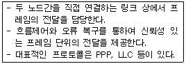
- 물리 계층
- 데이터 링크 계층
- 네트워크 계층
- 트랜스포트 계층
(정답률: 60%)
100. 공중 통신 사업자로부터 회선을 대여 받아 통신처리 기능을 이용, 부가적인 정보 서비스를 제공하는 서비스 망은?
- Local Area network
- Metropolitan Area Network
- Wide Area Network
- Value Added Network
(정답률: 55%)